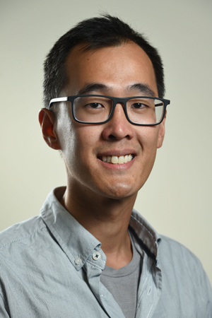

Mark Chiew, PhD

Tier 2 Canada Research Chair in Computational Biomedical Imaging
Associate Professor - Medical Biophysics
University of Toronto
Scientist - Physical Sciences Platform
Sunnybrook Research Institute
Sunnybrook Health Sciences Centre
Office: M6-605
Toronto, Ontario
Canada
M4N 3M5
mark.chiew@utoronto.ca
+1 416-480-6100 ext. 61018
Research Summary
My research focuses on the development of data acquisition strategies and computational methods for reconstruction of magnetic resonance imaging data. My group works primarily in neuroimaging, at both 3 T and 7 T magnetic field strengths.
Some research themes include the development of 3D acquisition and sampling strategies for functional MRI, and the reconstruction of highly under-sampled MRI data using sparse or low-rank models, or learned models with deep neural networks. We explore the application of computational imaging techniques to MRI for reducing acquisition times, improving spatial and/or temporal resolution, or improving robustness to physiological fluctuations or motion. In addition to fMRI, I am also interested in angiography and perfusion imaging with ASL, spectroscopic imaging, real-time MRI and multi-modal imaging.
Recent Publications
- Woods JG, Schauman SS, Chiew M, Chappell MA, Okell TW. Time-encoded pseudo-continuous arterial spin labeling: Increasing SNR in ASL dynamic angiography, Magnetic Resonance in Medicine n/a(n/a) doi:10.1002/mrm.29491
- Okell TW, Chiew M. Optimization of 4D Combined Angiography and Perfusion using Radial Imaging and Arterial Spin Labeling, 2022; doi:10.1101/2022.07.13.499856
- Graedel NN, Miller KL, Chiew M. Ultrahigh Resolution fMRI at 7T Using Radial-Cartesian TURBINE Sampling, Magnetic Resonance in Medicine 2022; 88(5):2058–2073 doi:10.1002/mrm.29359
- Millard C, Chiew M. A framework for self-supervised MR image reconstruction using sub-sampling via Noisier2Noise, 2022; doi:10.48550/arXiv.2205.10278
- Shahdloo M, Schüffelgen U, Papp D, Miller KL, Chiew M. Model-based dynamic off-resonance correction for improved accelerated fMRI in awake behaving nonhuman primates, Magnetic Resonance in Medicine 2022; 87(6):2922–2932 doi:10.1002/mrm.29167
Funding Sources
- Canada Research Chairs Program
- Engineering and Physical Sciences Research Council (EP/T013133/1)
- Royal Academy of Engineering Research Fellowship (RF201617\16\23)